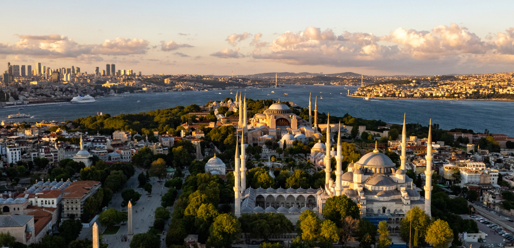

🇹🇷 تركيا — إسطنبول: دليل شامل للمستشار السياحي
دليل عملي ومحدث عن إسطنبول: معلومات أساسية، برامج سياحية، معالم، مسافات، نصائح، وفيديوهات توضيحية.


ملخص مختصر
إسطنبول هي المدينة الوحيدة في العالم التي تمتد على قارتين (أوروبا وآسيا)، وتُعد العاصمة الثقافية والتاريخية لتركيا. تجمع بين التاريخ العريق للإمبراطوريتين البيزنطية والعثمانية، والحياة العصرية النابضة، والأسواق الشهيرة، والمأكولات العالمية. تتميز بموقع استراتيجي على مضيق البوسفور، ومعالم أثرية مذهلة، وأسعار مناسبة مقارنة بالمدن الأوروبية. وجهة مثالية للعائلات والأزواج وعشاق التاريخ والتسوق.
معلومات أساسية سريعة
التأشيرة والدخول
- الدخول بدون تأشيرة للمواطنين الخليجيين لمدة تصل إلى 90 يوماً.
- يُنصح بحمل تذاكر العودة وتأكيد الفندق.
- جواز السفر يجب أن يكون ساري المفعول لمدة 6 أشهر على الأقل.
- للإقامات الطويلة أو العمل، يجب مراجعة السفارة التركية.
نقاط أساسية للمستشار
- الأمان: إسطنبول مدينة آمنة سياحياً، مناسبة للعائلات والمسافرين الأفراد.
- التكلفة: أسعار معقولة — وجبة بمطعم محلي من 200–400 ليرة، فندق 3 نجوم من 1500–3000 ليرة/ليلة.
- الطقس: معتدل في الربيع والخريف، حار ورطب صيفاً، بارد وممطر شتاءً.
- المواصلات: مترو وترام وحافلات بحرية — نظام نقل عام ممتاز ومترابط.
- الطعام: المطبخ التركي من أشهر المطابخ عالمياً — كباب، دونر، بقلاوة، وشاي تركي.
- الإنترنت: تتوفر شرائح SIM رخيصة (Turkcell، Vodafone، Türk Telekom) مع باقات إنترنت ممتازة.
- الدين: أغلبية مسلمة، مع مساجد تاريخية ومطاعم حلال في كل مكان.
المدن والمعالم الرئيسية
🏛️ السلطان أحمد (المنطقة التاريخية)
🛍️ البازارات والأسواق
🌉 البوسفور والجوانب المائية
🏙️ مناطق حديثة وثقافية
أفكار برامج عملية
📋 جدول مقارنة البرامج
| النمط | المدة | النطاق | المناسب لـ |
|---|---|---|---|
| قصير | 3 أيام | المنطقة التاريخية + البوسفور | عطلة نهاية أسبوع |
| متوسط | 7 أيام | المنطقة التاريخية • البوسفور • تقسيم • الجانب الآسيوي | عائلات / أزواج |
| طويل | 10 أيام | إسطنبول كاملة + رحلات يومية (بورصة، جزيرة الأمراء) | تجربة شاملة |
💡 نظرة سريعة
- المنطقة التاريخية — آيا صوفيا، المسجد الأزرق، قصر توبكابي.
- البوسفور — جولة بحرية لا تُفوَّت لمشاهدة المدينة من الماء.
- تقسيم والاستقلال — للتسوق والمطاعم والحياة الليلية.
- الجانب الآسيوي — كاديكوي وأسكودار للأجواء المحلية.
- رحلات يومية — بورصة وجزيرة الأمراء قريبة وسهلة.
تفاصيل البرامج اليومية
برنامج قصير — إسطنبول (3 أيام)
| اليوم | الفعاليات |
|---|---|
| 1 | الوصول إلى إسطنبول، جولة في ميدان السلطان أحمد، آيا صوفيا، المسجد الأزرق. |
| 2 | قصر توبكابي، صهريج البازيليكا، البازار الكبير، البازار المصري. |
| 3 | جولة البوسفور البحرية، برج غلطة، ثم التوجه للمطار. |
برنامج متوسط — إسطنبول (7 أيام)
| اليوم | الفعاليات |
|---|---|
| 1 | الوصول إلى إسطنبول والاستراحة. |
| 2 | المنطقة التاريخية: آيا صوفيا، المسجد الأزرق، ميدان السلطان أحمد. |
| 3 | قصر توبكابي، صهريج البازيليكا، البازار الكبير. |
| 4 | جولة البوسفور البحرية، قصر دولمة باهجة، أورتاكوي. |
| 5 | تقسيم وشارع الاستقلال، برج غلطة، متحف إسطنبول الحديث. |
| 6 | الجانب الآسيوي: كاديكوي، أسكودار، شارع بغداد. |
| 7 | تسوق نهائي، ثم المغادرة. |
برنامج طويل — إسطنبول + رحلات يومية (10 أيام)
| اليوم | الفعاليات |
|---|---|
| 1 | الوصول إلى إسطنبول والاستراحة. |
| 2 | المنطقة التاريخية: آيا صوفيا، المسجد الأزرق، ميدان السلطان أحمد. |
| 3 | قصر توبكابي، صهريج البازيليكا، البازار الكبير. |
| 4 | جولة البوسفور البحرية، قصر دولمة باهجة، أورتاكوي. |
| 5 | تقسيم وشارع الاستقلال، برج غلطة، متحف إسطنبول الحديث. |
| 6 | رحلة يومية إلى بورصة — الجامع الكبير، السوق القديم، جبل أولوداغ. |
| 7 | رحلة يومية إلى جزيرة الأمراء — جولات بالدراجات والعربات. |
| 8 | الجانب الآسيوي: كاديكوي، أسكودار، شارع بغداد. |
| 9 | ميني أتاتورك، أكوابارك، فيالي مول (تسوق). |
| 10 | تسوق نهائي، ثم المغادرة. |
المسافات بين المدن
| من | إلى | المدة | المسافة |
|---|---|---|---|
| مطار إسطنبول | السلطان أحمد | 45 دقيقة | 40 كم |
| مطار صبيحة | السلطان أحمد | 1 ساعة | 50 كم |
| السلطان أحمد | تقسيم | 20 دقيقة (ترام) | 5 كم |
| السلطان أحمد | البازار الكبير | 10 دقائق مشي | 1 كم |
| تقسيم | كاديكوي (آسيوي) | 25 دقيقة (عبارة) | 3 كم بحري |
| إسطنبول | بورصة | 3 ساعات (عبارة + سيارة) | 150 كم |
| إسطنبول | جزيرة الأمراء | 1.5 ساعة (عبارة) | 25 كم بحري |
| إسطنبول | أنقرة | 4.5 ساعات | 450 كم |
الطقس والمواسم
🌸 الربيع
مارس — مايو
معتدل ومريح، ازدهار الحدائق. مثالي للمشي والاستكشاف.
☀️ الصيف
يونيو — أغسطس
حار ورطب — مثالي لجولات البوسفور والأنشطة المائية.
🍂 الخريف
سبتمبر — نوفمبر
أفضل وقت للزيارة — طقس معتدل وأجواء مثالية.
❄️ الشتاء
ديسمبر — فبراير
بارد وممطر — مناسب للتسوق والمتاحف والأماكن المغلقة.
نصائح عملية
💰 المال والصرف
- العملة الرسمية: الليرة التركية (TRY).
- صرف تقريبي: 1 دولار ≈ 30 ليرة (تحقق من السعر الحالي).
- تتوفر صرافات في كل مكان بأسعار جيدة.
- البطاقات (Visa/Mastercard) مقبولة في معظم الأماكن.
- احتفظ ببعض النقد للأسواق والمواصلات الصغيرة.
🍽️ الطعام والشراب
- الكباب: أنواع متعددة — أضنا، أورفا، شيخ.
- الدونر: أشهر وجبة سريعة تركية.
- البقلاوة: حلوى شرقية شهيرة.
- الشاي التركي: جزء أساسي من الثقافة.
- تتوفر مطاعم حلال في كل مكان.
🚗 المواصلات
- المترو والترام: نظام نقل ممتاز يغطي معظم المدينة.
- بطاقة إسطنبول كارت: للدفع في جميع وسائل النقل.
- العبارات: تربط الجانبين الأوروبي والآسيوي.
- التكاسي: متوفرة لكن تأكد من استخدام العداد.
- تطبيقات: BiTaksi و Uber متوفرة.
📱 اتصال وإنترنت
- شرائح SIM: Turkcell أو Vodafone — تغطية ممتازة.
- الأسعار: باقات إنترنت جيدة من 300–600 ليرة.
- تتوفر شبكات Wi-Fi مجانية في معظم الفنادق والمقاهي.
- تطبيق Google Maps يعمل بكفاءة في إسطنبول.
- تطبيقات النقل والتوصيل متوفرة بكثرة.
أرقام مهمة
فيديوهات توضيحية
خريطة الوجهة

⚠️ ملاحظة: هذه الصفحة مرجع تعليمي عام — تحقق من المعلومات الرسمية (التأشيرة، أسعار الصرف، القيود، وأرقام الطوارئ) قبل أي عرض للعميل. الأسعار والمعلومات قابلة للتغير.